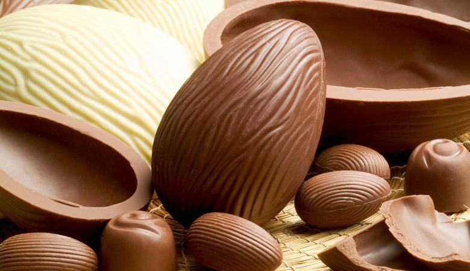
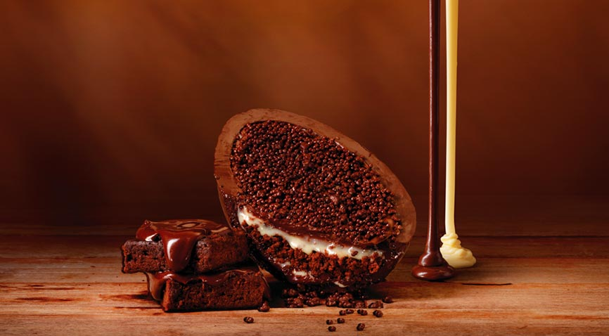

A Páscoa é uma celebração do calendário religioso cristão em memória à
crucificação e à ressurreição de Jesus Cristo. A celebração cristã inspirou-
Uma característica bem conhecida da Páscoa é o fato de que sua celebração é móvel, portanto, todo ano ela é realizada em uma data diferente. Os critérios usados para definir essa data foram estabelecidos pelas autoridades da Igreja Católica durante o Concílio de Niceia, realizado no século IV d.C.
A Páscoa comemorada pelos cristãos é uma ressignificação de uma festa judaica. No entanto, a comemoração
cristã e a judaica têm significados iguais. No entanto, a comemoração cristã e a judaica
têm significados completamente distintos. Esta, chamada de "pesach", era realizada pela lembrança da libertação
dos hebreus da escravidão no Egito.
Essa história é narrada nos “Pentateucos” (os cinco últimos livros da Bíblia) (os cinco primeiros livros da Bíblia).
A palavra "pesach", do idioma hebraico, significa “passagem” e faz menção à passagem do anjo da morte no Egito — a décima praga,
conforme a narrativa bíblica. A festa foi revisada pelos cristãos, passando a relacionar-
A Páscoa é, para muitos cristãos, a festa de maior importância do calendário religioso, uma vez que ressalta um acontecimento de grande importância dentro da fé cristã: a ressurreição — entendida no cristianismo como uma demonstração da divindade de Jesus.
Essa ideia pode ser percebida na Bíblia, uma vez que ela registra uma fala de Paulo, que afirma em (I Coríntios 15:14): “E, se Cristo não ressuscitou, logo é vã a nossa pregação, e também é vã a vossa fé”. Assim, podemos identificar a importância da ressurreição de Jesus dentro da visão religiosa do cristianismo.
Desse ponto de vista, foi por meio da ressurreição que a humanidade teve a redenção de seus pecados. Jesus Cristo,
portanto, voluntariamente sacrificou-
Como mencionado, a Páscoa é uma das celebrações mais importantes do calendário religioso dos cristãos, e, portanto, tradições são realizadas nesse período. Neste texto já mencionamos a crucificação e ressurreição de Cristo, conhecidas como Paixão de Cristo.
No Sábado de Aleluia, em determinados locais, é realizado um ritual conhecido como Malhação de Judas, no qual um boneco com proporções humanas é espancado e queimado como uma espécie de punição a Judas por ter traído Jesus. Durante a Páscoa, é tradição que as missas ou cultos sejam voltados para a celebração desses acontecimentos e grandes ceias (Eucaristia, para os católicos) são realizadas.
No Brasil, no interior de um dos seus estados chamado Goiás, um ritual de Páscoa é realizado há quase três séculos: a Procissão do Fogaréu. Essa procissão foi introduzida na cidade, em meados do século XVIII, por um padre espanhol e encena a perseguição e prisão de Jesus Cristo. A festa é um dos grandes patrimônios da cultura daquele estado e reúne milhares de pessoas todos os anos.
De um ponto de vista secular, a Páscoa também tem tradições bastante consolidadas. Essas práticas têm relação com os ovos de
Páscoa e podem manifestar-
A data da Páscoa, como mencionado, é móvel, e sua instituição foi feita, no século IV, pela Igreja Católica. Durante o Concílio de Niceia, as autoridades da Igreja definiram sua celebração para o primeiro domingo que acontece após a lua cheia seguinte ao equinócio de primavera (para o Hemisfério Norte).

O ovo de Páscoa é um dos grandes símbolos da Páscoa e é bastante comum que as pessoas presenteiem umas às outras com esse item. Na Antiguidade, o ovo era visto como símbolo de fertilidade em diferentes culturas, e muitos decoravam ovos e os usavam como presentes. Os primeiros ovos de chocolate surgiram na França, no século XVIII.
Ao longo da história, o ovo foi enxergado como um dos mais tradicionais símbolos associados com a fertilidade e com o ciclo e a renovação
da vida. Com isso, os ovos de galinha, por exemplo, tornaram-
Na Pérsia, por exemplo, era comum que a mesa do jantar fosse decorada com ovos coloridos durante o Noruz, festival que celebrava a passagem de ano na cultura persa. Essa celebração estava ligada com o zoroastrismo, religião popular na Pérsia. Os ovos coloridos que decoravam a mesa de jantar eram consumidos no fim da noite.
Havia também uma forte simbologia dos ovos na cultura chinesa. A mitologia chinesa afirmava que a formação do Universo se deu por meio do nascimento de
Pan Ku. Esse deus teria sido formado dentro de um ovo e, ao libertar-
Na Ucrânia, antes da chegada do cristianismo, os ovos eram considerados uma fonte de vida e entendidos como símbolo do renascimento da vida depois dos rigorosos invernos que atingiam a região. Além disso, os ovos tinham uma associação muito forte com Dazhboh, deus do Sol na mitologia eslava.
Na Europa pagã, ainda existem estudiosos que fazem uma relação dos ovos com Ostara, deus presente na mitologia germânica. O culto a Ostara tinha uma grande relação com a primavera, período em que a vida renasce após um longo inverno. Para celebrar a ocasião, existia uma brincadeira em que crianças procuravam ovos decorados em suas casas.
O grande fator que une alguns dos eventos citados é o equinócio da primavera. Essas celebrações aconteciam próximo a esse momento, que marca o início dessa estação. Como sabemos, o equinócio da primavera no Hemisfério Norte ocorre mais ou menos na mesma época em que a celebração da Páscoa.

Fórmula Molecular do chocolate (Teobromina): C7H8N4O2
No século XVIII, confeiteiros franceses decidiram fabricar ovos de chocolate e decorar o seu interior com bombons. O costume fez sucesso e se consolidou durante o período da Páscoa, mas nem todos tinham acesso a essa mercadoria, pois, na época, o chocolate e o ovo de Páscoa eram artigos muito caros.
Com o tempo, o preço do ovo de Páscoa foi se tornando mais acessível e esse item se transformou em um dos artigos mais populares da Páscoa. Atualmente, o comércio do ovo de Páscoa aquece o mercado todos os anos, gerando empregos e movimentando milhões de reais no Brasil e em outros países.
Uma vida nova
Um tempo novo
É tempo de alegria
Venha alegrar-se conosco
As coisas velhas já se passaram
É tempo de renovo
Aleluia! Aleluia! Jesus ressuscitou
Toda glória seja dada ao Salvador
Ele morreu para dar-nos guarida
Isso é motivo de louvor
Na cruz tudo se consumou
Como foi profunda a sua dor!
O Rei deu grande exemplo de amor
Mesmo sendo torturado
Pela terrível humanidade
Teve compaixão e a perdoou
Vivamos o perdão
Não guardemos rancor
Amemos uns aos outros
como o Altíssimo nos ordenou
Uma vida nova
Um tempo novo
É tempo de alegria
Venha alegrar conosco
Sidney Alves das Virgens
A Páscoa mais doce.
Não é coberta com chocolate.
É aquela recheada de amor,
fé, união, gratidão
e a humildade do perdão.
Num momento de reflexão e renovação.
Ajudar o próximo estendendo a mão.
Partilhando o amor sincero de alma
e coração.
Crysgrer
1 < 2 > 3 ≤ 4 ≥ 5 ≠ 6 £ 7 ¥ 8 € 9 ™ 10 ® 11 © 12 ‰ 13 ∑ 14 ∞ 15 × 16 ± 17 ⊕ 18 √ 19 δ 20 Δ 21 α 22 Α 23 Λ 24 Ω 25 φ 26 ← 27 ↞ 28 → 29 ↠ 30 ↑ 31 ↟ 32 ↓ 33 ↡ 34 ↔...